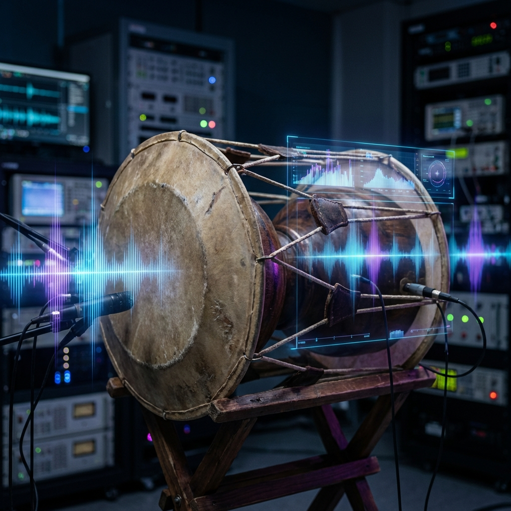

<section id="tech-rnd-detail" class="detail-section">
    <div class="container">
        <div class="detail-header">
            <button onclick="location.reload()" class="btn-back">
                <i class="fas fa-arrow-left"></i> Back to Main
            </button>
            <h1>Tech R&D Cooperation</h1>
            <p class="detail-subtitle">Pioneering Audio Innovation through Research and Partnership</p>
        </div>

        <div class="detail-content">
            <div class="service-highlight">
                <div class="service-text">
                    <h2>Joint Research & Patents</h2>
                    <p>We collaborate with institutions and companies to develop cutting-edge audio technologies. From
                        patent research to prototype development, we are your R&D partner.</p>
                    <ul class="feature-list">
                        <li><i class="fas fa-check"></i> Patent Consulting & Application Support</li>
                        <li><i class="fas fa-check"></i> Educational Instrument Development</li>
                        <li><i class="fas fa-check"></i> Traditional Music Digitization Research</li>
                    </ul>
                </div>
                <div class="service-visual">
                    <i class="fas fa-microscope"></i>
                </div>
            </div>

            <div class="service-highlight reverse">
                <div class="service-text">
                    <h2>AI & Audio Analysis</h2>
                    <p>Leveraging deep learning for audio synthesis, separation, and analysis. We build solutions that
                        push the boundaries of what's possible in sound technology.</p>
                    <ul class="feature-list">
                        <li><i class="fas fa-check"></i> AI Voice Synthesis & Conversion</li>
                        <li><i class="fas fa-check"></i> Music Information Retrieval (MIR)</li>
                        <li><i class="fas fa-check"></i> Automated Audio Processing Pipelines</li>
                    </ul>
                </div>
                <div class="service-visual">
                    <i class="fas fa-brain"></i>
                </div>
            </div>

            <div class="category-portfolio">
                <h3>Key Projects</h3>
                <div class="pf-grid grid grid-cols-1 md:grid-cols-2 gap-6">
                    <div
                        class="pf-card bg-white rounded-xl shadow-md overflow-hidden hover:shadow-lg transition-shadow duration-300">
                        <div class="pf-thumb h-64 overflow-hidden relative">
                            
                        </div>
                        <div class="pf-info p-6">
                            <h4 class="text-xl font-bold mb-2">National Gugak Center</h4>
                            <span class="text-gray-600 block">Traditional Percussion Analysis & Digitization</span>
                        </div>
                    </div>
                    <div
                        class="pf-card bg-white rounded-xl shadow-md overflow-hidden hover:shadow-lg transition-shadow duration-300">
                        <div class="pf-thumb h-64 overflow-hidden relative">
                            
                        </div>
                        <div class="pf-info p-6">
                            <h4 class="text-xl font-bold mb-2">Hoshimi Electronic Drum</h4>
                            <span class="text-gray-600 block">Next-Gen Sound Engine Development</span>
                        </div>
                    </div>
                </div>
            </div>

        </div>
    </div>
</section>